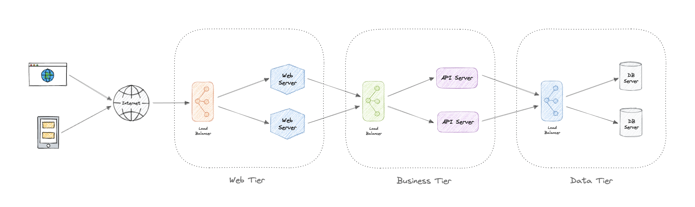
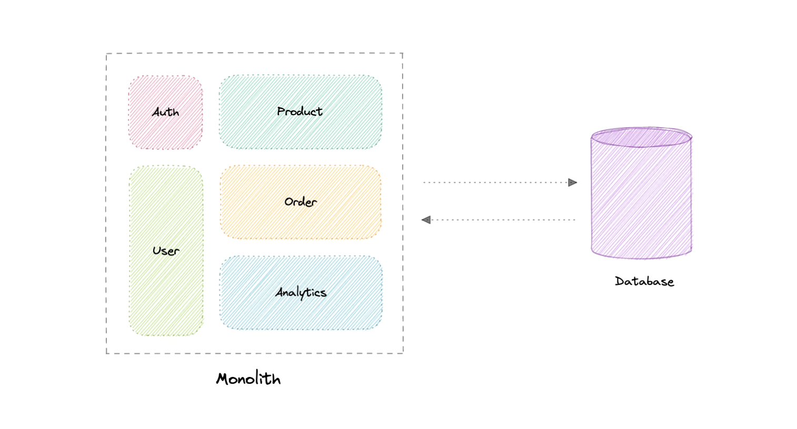
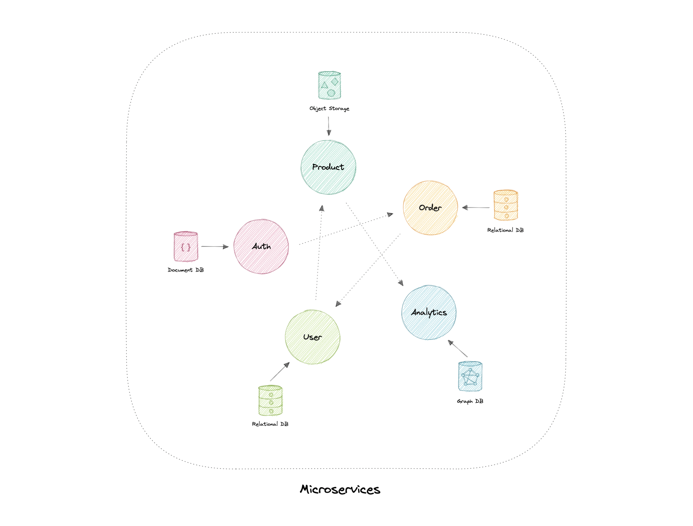
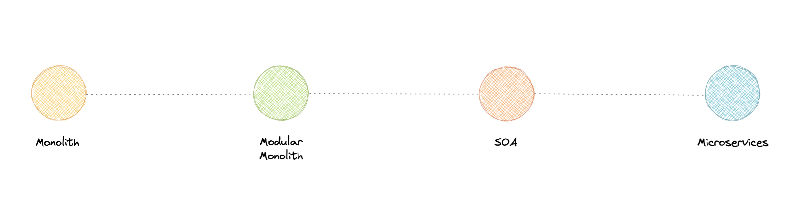
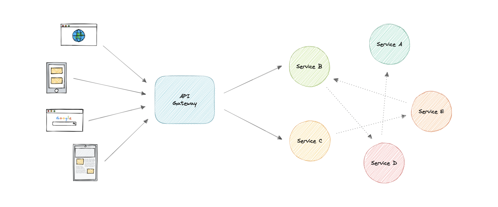
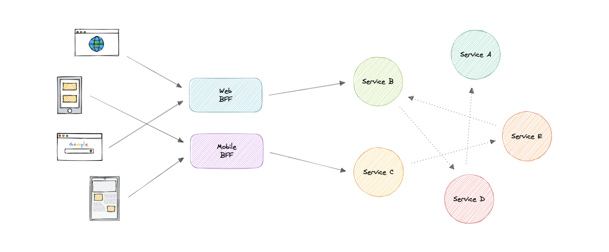

Kiến trúc ứng dụng
Cách tổ chức ứng dụng ở mức kiến trúc: N-tier, cuộc chiến Monolith vs Microservices, và vai trò của API Gateway.
N-tier Architecture
Chia ứng dụng thành các layer (lớp logic) và tier (tầng vật lý). Layer cao có thể dùng layer thấp, không ngược lại. Tách tier vật lý cải thiện scalability & resiliency nhưng thêm latency mạng.
- 3-Tier (phổ biến): Presentation → Business Logic → Data Access.
- 2-Tier: Presentation (client) ↔ Data store trực tiếp.
- 1-Tier: tất cả trên một máy/app (như chạy app trên một PC).

Monolith vs Microservices ⭐
Monolith: ứng dụng tự chứa, xây như một đơn vị duy nhất, làm mọi bước cho một nhu cầu nghiệp vụ.
Microservices: tập hợp các dịch vụ nhỏ, tự chủ, mỗi service triển khai một business capability trong một bounded context, có codebase & database riêng (database-per-service), deploy độc lập.
| Monolith | Microservices | |
|---|---|---|
| Phát triển ban đầu | Đơn giản, dễ debug/test | Phức tạp (hệ phân tán) |
| Giao tiếp nội bộ | Nhanh, đáng tin (in-process) | Qua mạng (latency, thách thức) |
| Deploy | Redeploy toàn bộ mỗi lần update | Deploy từng service độc lập |
| Scale | Khó, tightly coupled | Scale từng service riêng |
| Reliability | 1 bug có thể sập cả hệ thống | Cô lập lỗi tốt hơn |
| Tech stack | Cam kết một stack | Tự do chọn stack mỗi service |


Microservices giải quyết vấn đề tổ chức (organizational) nhiều hơn công nghệ. Nên bắt đầu bằng monolith khi xây hệ thống mới. Chỉ tách microservices khi: team quá lớn cho một codebase, bị block bởi team khác, có business value rõ ràng. Cảnh giác "distributed monolith" — trông như microservices nhưng vẫn tightly coupled (share database, cần giao tiếp low-latency, phụ thuộc lẫn nhau).
Deploy một app duy nhất nhưng tách code thành các module độc lập theo feature → giảm phụ thuộc, dễ nâng cấp từng phần. Là bước đệm tốt trước khi (nếu cần) tách microservices.

API Gateway
Là công cụ quản lý API, nằm giữa client và một tập backend service — single entry point đóng gói kiến trúc nội bộ và cung cấp API tùy biến cho từng client.
Vì sao cần? Microservices thường cung cấp API fine-grained → client phải gọi nhiều service. API Gateway gom lại một điểm vào với nhiều tính năng quản lý.

Tính năng: authentication/authorization, service discovery, reverse proxy, caching, security, retry & circuit breaking, load balancing, logging/tracing, API composition, rate limiting/throttling, versioning, routing, IP whitelisting.
Có thể là single point of failure, ảnh hưởng performance, thành bottleneck nếu không scale đúng, và cấu hình phức tạp. → Nhớ chạy bản dự phòng.
Tạo backend riêng cho từng loại frontend (web/mobile...). Khi data từ microservice không đúng format/filter mà frontend cần, BFF là lớp trung gian lấy & định dạng lại data. GraphQL hoạt động rất tốt như một BFF.

N-tier tách layer/tier (3-tier phổ biến). Monolith đơn giản lúc đầu, microservices scale & cô lập lỗi tốt nhưng phức tạp — đừng vội tách, hãy bắt đầu monolith. API Gateway = single entry point gom nhiều tính năng (auth, routing, rate limit...); BFF tùy biến backend theo từng frontend.